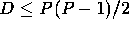
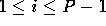

Don Giovanni likes to dance--especially with girls! And everyone else in the party enjoyed the dance, too. Getting a chance to dance with the host (that is Don Giovanni) is the greatest honour; failing that, dancing with someone who has danced with the host or will dance with the host is the second greatest honour. This can go further. Define the Giovanni number of a person as follows, at the time after the party is over and therefore who has danced with whom is completely known and fixed:
The first line has two numbers P and D; this means there are P persons in the party (including Don Giovanni) and D dancing couples (P ≤ 1000 and .) Then D lines follow, each containing two distinct persons, meaning the two persons has danced. Persons are represented by numbers between 0 and P-1; Don Giovanni is represented by 0.
As noted, we design the input so that you will not need the  rule in
computing Giovanni numbers.
rule in
computing Giovanni numbers.
We have made our best effort to eliminate duplications in listing the dancing couples, e.g., if there is a line ``4 7'' among the D lines, then this is the only occurrence of ``4 7'', and there is no occurrence of ``7 4''. But just in case you see a duplication, you can ignore it (the duplication, not the first occurrence).
Output P-1 lines. Line i is the Giovanni number of person i, for . Note that it is P-1 because we skip Don Giovanni in the output.
1 5 6 0 1 0 2 3 2 2 4 4 3 1 2
1 1 2 2